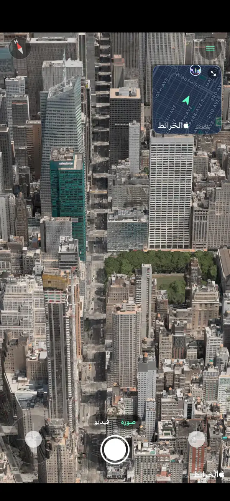
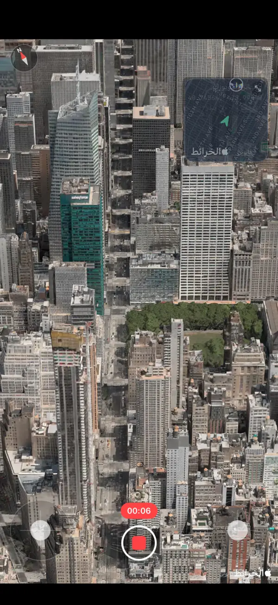
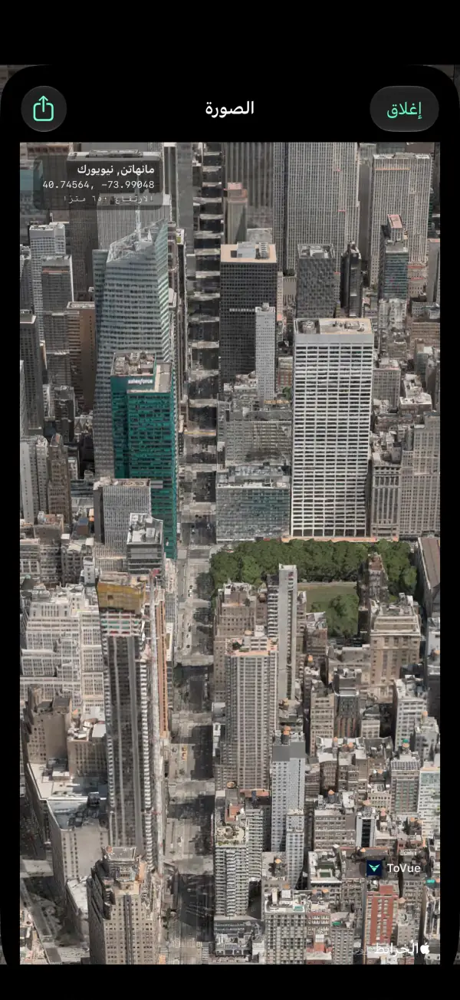
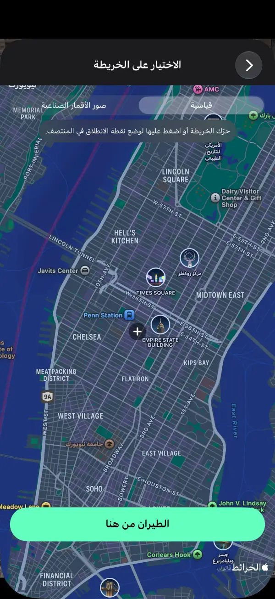
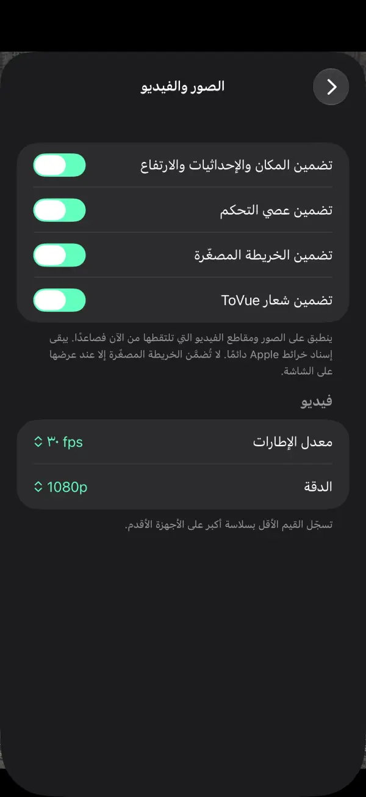

حلّق فوق الخرائط ثلاثية الأبعاد كطائرة درون.
حلّق بحرية فوق مدن العالم على iPhone وiPad.
احتفظ بالمشهد صورةً أو فيديو — الخريطة وحدها، من دون أزرار التحكم.
 مجاني · بلا تسجيل · بلا الوصول إلى موقعك
مجاني · بلا تسجيل · بلا الوصول إلى موقعكما يمكنك فعله
حلّق بعصي التحكم واحتفظ بالمشهد كما تراه تمامًا.
حلّق بحرية
اصعد واستدر وتقدّم بعصوَي تحكم على الشاشة، أو بإصبع واحد في وضع اليد الواحدة.
خريطة مصغّرة
اعرف مكانك والاتجاه الذي تنظر إليه. اضغط عليها لاختيار مكان جديد على الخريطة.
سجّل فيديو
بدّل بين الصورة والفيديو كما في تطبيق الكاميرا، وسجّل رحلتك.
صور للخريطة وحدها
التقط المشهد من دون أزرار التحكم، مع اسم المكان والإحداثيات والارتفاع إن أردت.
انتقل إلى أي مكان
ابحث أو اختر نقطة على الخريطة وابدأ التحليق منها فورًا.
11 لغة
العربية والإنجليزية واليابانية والصينية والكورية وغيرها. لـ iPhone وiPad.
لقطات الشاشة





الأسعار
كل شيء مجاني. تفضّل بلا إعلانات؟ اشترِ مرة واحدة.
الأساسي
مجاني
- كل ميزات التحليق والتصوير والفيديو
- إعلان شريطي وإعلان بملء الشاشة بعد الانتقال
- شعار ToVue على الصور ومقاطع الفيديو
إزالة الإعلانات وشعار ToVue
شراء لمرة واحدة
- عملية شراء واحدة، وليست اشتراكًا
- بلا أي إعلانات
- إمكانية إزالة شعار ToVue من الصور ومقاطع الفيديو
معلومات مفيدة
- ToVue عارض خرائط افتراضي. لا يتحكم في طائرة درون حقيقية، وليس أداة للملاحة أو لتخطيط الطيران.
- المباني والتضاريس ثلاثية الأبعاد مصدرها خرائط Apple، ويختلف مستوى تفاصيلها حسب المنطقة.
- يلزم الاتصال بالإنترنت. لا يستخدم ToVue نظام GPS أبدًا ولا يطلب موقعك.
- يبقى إسناد خرائط Apple دائمًا على الصور ومقاطع الفيديو.
انطلق والتقط المشهد من السماء.
مجاني · بلا تسجيل · بلا الوصول إلى موقعك